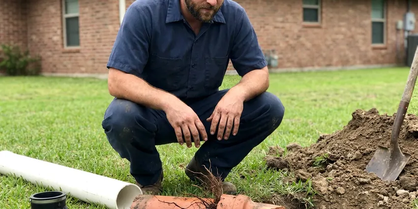

Pipe Repair in Waco, TX
When your pipes need attention in Waco, TX, DFJ Plumbing is ready. We offer professional pipe repair services to ensure your plumbing system runs smoothly and safely.
- Fast Response Times
- Licensed & Insured
- Upfront Pricing
- Quality Workmanship
Your Local Pipe Repair Specialists in Waco, TX.
Don't let pipe issues disrupt your home. Call us for prompt and professional service.
Dependable Pipe Repair Services in Waco, TX
DFJ Plumbing offers comprehensive pipe repair services across Waco, TX. From small leaks to major pipe bursts, our certified plumbers are equipped to diagnose and fix any issue, ensuring your plumbing system is restored to optimal condition.
Our expertise includes:
- Diagnosing hidden leaks with advanced tools
- Repairing burst pipes and frozen lines
- Replacing corroded or damaged pipe sections

Additional Plumbing Repair Services in Waco, TX
We offer expert plumbing repair services across Waco, TX to stop leaks, clear blockages, and keep every fixture working the way it should.


Customers
Why Choose DFJ Plumbing for Pipe Repair in Waco, TX?
We don't just patch problems, we provide lasting solutions. Our plumbers in Waco, TX are trained to identify the root cause of pipe issues, ensuring repairs are effective and meet local plumbing codes.
- Local Expertise, We understand how Texas soil conditions and temperature swings impact plumbing systems.
- Advanced Tools, We use modern leak detection and pipe inspection equipment for accurate diagnostics.
- Code Compliant, All repairs meet or exceed Waco and Texas plumbing regulations for your safety and peace of mind.
Citywide Coverage
DFJ Plumbing proudly serves every neighborhood in Waco, ensuring that no matter where you are, expert pipe repair is just a phone call away. We know the diverse housing types across Waco, from historic homes to new developments, and tailor our approach accordingly.
Experienced Team
The plumbers at DFJ Plumbing are not only experts in pipe repair but also committed to ongoing training on the latest techniques and materials. This means you get the most effective and long-lasting solutions for your home's piping issues in Waco, TX.
Safety-First Approach
When we perform pipe repair, we prioritize not just the fix, but the long-term safety of your property. Our technicians ensure all work is up to code, using proper materials and installation methods to prevent future problems and protect your investment in Waco, TX.
Trusted Certified Waco Plumbing Services Professionals
At DFJ Plumbing, we take pride in providing certified plumbing services throughout Waco, TX. Backed by leading industry credentials, our experienced plumbers combine technical skill with genuine customer care. Whether it is repair, installation, or maintenance, we follow strict safety and quality standards to deliver lasting results you can trust.
Call Us Now PHCC Plumbing Contractor Recognition
PHCC Plumbing Contractor Recognition Better Business Bureau (BBB) Accreditation
Better Business Bureau (BBB) Accreditation Angi Certified Pro
Angi Certified Pro ISO 9001 Quality Management Certification
ISO 9001 Quality Management CertificationReliable Pipe Repair Services in Waco, TX
Burst Pipe Repair in Waco
A burst pipe can cause significant water damage in minutes, especially during unexpected Texas freezes. Our emergency response team in Waco is equipped to quickly locate the ruptured section, shut off the water, and perform a robust repair. We handle all pipe materials, including copper, PEX, and PVC, ensuring a watertight and durable fix to prevent further damage to your property. We also advise on insulation to prevent future freeze-related bursts.

Leaking Pipe Repair in Waco, TX
Even a small leak can lead to major problems like mold growth, wood rot, and foundation damage, common concerns with older homes in Waco. Our technicians use advanced leak detection equipment, such as acoustic sensors and thermal imaging, to pinpoint hidden leaks behind walls, under floors, or in slab foundations. We then perform precise repairs, whether it's a simple joint tightening or replacing a corroded pipe section, ensuring the leak is fully resolved in Waco, TX.
Corroded Pipe Replacement in Waco
Older homes in Waco often have galvanized steel or aging copper pipes that are prone to corrosion, leading to discolored water, low water pressure, and frequent leaks. DFJ Plumbing provides comprehensive corroded pipe replacement services. We can replace problematic sections or re-pipe your entire home with modern, durable materials like PEX or new copper, significantly improving water quality and system longevity. We ensure minimal disruption during the replacement process.
Slab Leak Pipe Repair in Waco, TX
Slab leaks are particularly challenging in Waco, TX due to our expansive clay soils, which can shift and stress underground pipes. Our plumbers are experts in diagnosing and repairing slab leaks beneath your home's concrete foundation. We use non-invasive methods like electronic leak detection to find the exact location, then offer solutions such as direct access repair, rerouting the line, or trenchless techniques to fix the pipe with minimal impact on your property.
PEX Pipe Repair & Installation in Waco
PEX piping is a popular, flexible, and freeze-resistant alternative to traditional copper or PVC, often used in newer constructions and remodels in Waco. Our team is proficient in PEX pipe repair, addressing any crimp failures or accidental punctures. We also specialize in PEX pipe installation, offering a reliable, corrosion-resistant, and cost-effective solution for re-piping projects, ensuring a leak-free and efficient plumbing system for years to come.
Emergency Pipe Repair in Waco, TX
Plumbing emergencies, like a major pipe burst or severe leak, don't wait for business hours. That's why DFJ Plumbing offers emergency pipe repair services throughout Waco, TX. Our plumbers are on call to respond quickly, mitigate damage, and perform urgent repairs to restore your plumbing system and peace of mind. We understand the stress these situations cause and strive to provide immediate, effective solutions.
Underground Pipe Repair in Waco
Pipes buried underground in Waco are susceptible to damage from soil shifting, tree root intrusion, and heavy vehicle traffic. Our underground pipe repair services include precise excavation and trenchless repair options like pipe bursting or pipe lining. We identify the exact problem area, whether it's a sewer line or water main, and implement the most efficient and least disruptive repair method to restore functionality without extensive yard damage.

Commercial Pipe Repair in Waco, TX
Businesses in Waco, TX rely on a robust plumbing system. DFJ Plumbing provides comprehensive commercial pipe repair services, understanding that plumbing issues can severely impact operations and revenue. We handle everything from large-diameter pipe repairs to complex commercial system diagnostics, working efficiently to minimize downtime and ensure your business's plumbing is reliable and up to code, safeguarding your property and operations.
Pipe Repair Near Me in Waco, TX
Looking for reliable pipe repair near me in Waco, TX? DFJ Plumbing is your local expert, always ready to deliver prompt and professional service. We're committed to serving our community with high-quality plumbing solutions.
When you need pipe repair in Waco, TX, you want a trusted local company. Our team is familiar with the plumbing infrastructure throughout the area, ensuring efficient service tailored to your home's needs.
DFJ Plumbing at a Glance
- Licensed and insured plumbers serving Waco, TX
- Same-day appointments and 24/7 emergency response
- Upfront, flat-rate pricing before work begins
- 4.9-star rated by 812+ Texas customers
Waco Map
Waco Information
- Population
- 144,816
- Area codes
- 254/430/903
- Service area
- Waco and communities within 40 miles
- Nearby
- Temple, Killeen, Burleson, Georgetown
Effective pipe repair is essential for homes in Waco, TX due to the region's expansive clay soils, which can cause foundation shifts and put stress on underground plumbing, leading to leaks and breaks.
Expert Services
Trust our professionals for reliable DFJ Plumbing solutions in Waco, TX.
Our Specialized Plumbing Services in Waco, TX
At DFJ Plumbing, we provide a complete range of plumbing services across Waco, TX. From leak detection to full system installations, our team ensures fast, precise, and affordable service for both residential and commercial properties. Explore our core services below:


How Our Pipe Repair Process Works in Waco, TX
Our methodical approach to pipe repair in Waco, TX guarantees a thorough diagnosis and a lasting solution, minimizing disruption to your home.
Request a Quote
Contact us at (737) 405-5978 to schedule an appointment. Our friendly staff will gather details about your pipe issue and set up a convenient time for a plumber to visit your Waco home.
Diagnosis & Plan
Our skilled technician arrives on time to assess the pipe damage, using advanced tools to accurately diagnose the problem. We then explain the issue and present a clear repair plan and upfront pricing.
Expert Repair
Once you approve, our plumber performs the necessary pipe repair using high-quality materials and proven techniques. We work efficiently to restore your plumbing system and ensure the repair is durable.
Frequently Asked Questions About Pipe Repair in Waco
The cost of pipe repair in Waco, TX varies widely depending on the type of pipe, the location of the damage, and the extent of the repair. Minor leak repairs can range from $150 to $500, while more complex issues like burst pipes or slab leaks might cost between $800 and $5,000 or more, especially if excavation is required. We provide a detailed estimate after a thorough assessment.
Common signs include a sudden drop in water pressure, visible water stains on walls or ceilings, musty odors, the sound of running water when no fixtures are in use, unusually high water bills, or damp spots in your yard. Discolored water or recurring clogs can also indicate internal pipe issues.
DFJ Plumbing stands behind the quality of our work. We offer a warranty on all our pipe repair services, covering both parts and labor. The specific terms of the warranty will be discussed with you before any work begins, giving you peace of mind in our craftsmanship.
To prevent future pipe problems, consider insulating exposed pipes, especially before winter freezes. Avoid pouring grease down drains, be mindful of what you flush, and address minor leaks promptly. Regular plumbing inspections can also catch potential issues early, such as signs of corrosion or minor root intrusion, before they escalate.
Yes, for underground sewer and water lines, we offer trenchless pipe repair solutions like pipe lining and pipe bursting. These methods allow us to repair or replace damaged pipes with minimal excavation, preserving your landscaping and reducing the overall disruption and cost compared to traditional trenching methods. This is often an excellent option for homes in Waco.
Our experienced plumbers are equipped to repair all common types of residential and commercial piping found in Waco, TX homes and businesses. This includes copper, PEX (cross-linked polyethylene), PVC (polyvinyl chloride), CPVC (chlorinated polyvinyl chloride), and galvanized steel pipes. We also handle cast iron and lead service lines where applicable.
While temporary fixes like clamps or tape might stop a small drip, they are rarely long-term solutions and can fail, leading to bigger problems. Professional plumbers have the tools, expertise, and materials to properly diagnose the cause of the leak and perform a durable, code-compliant repair. For your safety and to prevent further damage, it's always best to call a professional for pipe repair.
The duration of pipe repair depends on the complexity of the issue. A simple visible leak might be fixed within an hour or two. More involved repairs like burst pipes behind walls or slab leaks can take several hours to a full day, sometimes requiring multiple visits if specialized parts are needed. We strive to complete repairs as efficiently as possible.
What People Are Saying About Our Plumbing Experts?

Mark T.
When our office needed drain cleaning, DFJ Plumbing provided quick, reliable service. The plumber arrived on time and made sure every drain flowed perfectly before leaving. Very satisfied.
Drain Cleaning · Waco, TX
James P.
Our commercial plumbing system had a leak under the sink, and DFJ Plumbing handled it professionally. The plumbers arrived quickly and restored everything without disruption to our customers.
Commercial Plumbing · Waco, TX
Laura S.
I scheduled a water heater replacement, and the team made the process smooth and affordable. The new unit works perfectly, and they cleaned up after completing the job.
Water Heater Replacement · Georgetown, TX
Emily R.
I called DFJ Plumbing for plumbing repair, and the technician was fast, polite, and thorough. They explained the problem clearly and fixed it the same day. I will definitely hire them again. Highly recommended!
Plumbing Repair · Cedar Hill, TX
Patricia H.
We had a slab leak that two other companies could not find. DFJ Plumbing located it in under an hour, explained our options, and the price matched the quote to the dollar.
Slab Leak Repair · Cedar Hill, TXSofia M.
Two new toilets installed in one visit, no mess left behind, and the tech even adjusted a faucet he noticed was dripping. Fair pricing and really friendly.
Toilet Installation · Burleson, TX